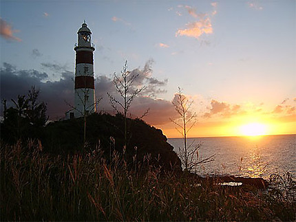
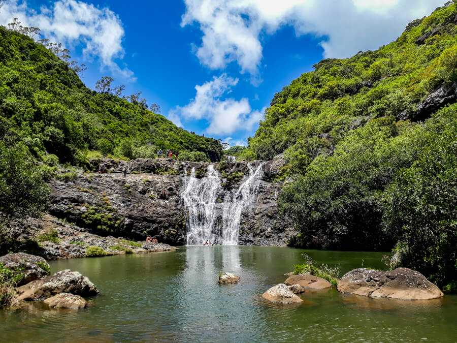

L'Île Maurice au delà des plages : ces endroits qui valent le détour
L'île Maurice, l'étoile et la clé de l'océan Indien, séduit les voyageurs du monde entier avec ses plages de sable doré, ses lagons bleus et sa riche culture. Au-delà des images de cartes postales, l'île réserve de véritables joyaux à ceux qui prennent le temps de la découvrir. Démarquez-vous et osez : les lieux que vous retrouverez ici vous émerveilleront autrement.
Le marché central : Dites oui aux couleurs et aux saveurs
Le marché central de Port-Louis, c'est sans doute l'effervescence de la capitale. Ce lieu emblématique offre une explosion de couleurs, d'odeurs et de saveurs. Vous y trouverez des étals débordants de fruits de saison tropicaux, d'épices exotiques, de tisanes fraîches et de travaux artisanaux. Pour finir votre balade entre les allées, optez pour nul autre qu'un alouda glacé chez Pillay pour vous désaltérer.
La route du thé : Bois Chéri, la fierté de l'île
Amateurs de thé, la route du thé à Bois Chéri est faite pour vous. Découvrez le Sud et ses plantations verdoyantes. Lors de votre visite à l'usine de Bois Chéri, dégustez différentes variétés dans un cadre paisible et enchanteur. Cette expérience promet de vous « théléporter » au cœur de l'histoire et des traditions de la culture du thé à l'île Maurice.
Le phare d'Albion : Le témoin du passé maritime
Le phare d'Albion, érigé sur la côte ouest, offre une vue imprenable sur l'océan. Son histoire fascinante remonte au XIXe siècle, époque où il guidait les navires à travers les eaux tumultueuses. Aujourd'hui, il demeure un emblème de l'héritage maritime de l'île. Fermez les yeux, inspirez l'air marin et écoutez le son des vagues. Si vous y allez l'après-midi, vous aurez la chance de voir un coucher de soleil à en couper le souffle.

La montagne du Morne : patrimoine mondial de l'UNESCO
Sur les fameux clichés de cascade sous-marine, vous avez peut-être déjà vu la montagne du Morne, sans même le savoir. Ce site naturel est d'une beauté exceptionnelle. La montagne porte le poids de l'histoire : les esclaves en fuite au XVIIIe et XIXe siècle s'y réfugiaient. Une ascension vers son sommet sera autant un moment de détente qu'un hommage à ceux qui ont œuvré pour une Île Maurice libre.
Les 7 cascades de Tamarin : Pour les amoureux de randonnée et de nature
Les amateurs de randonnée seront comblés par la beauté sauvage des 7 cascades de Tamarin. Nichées au cœur d'une végétation luxuriante, ces cascades offrent une escapade rafraîchissante loin des sentiers battus. Avec un peu de chance, les Pailles-en-queue, oiseaux protégés à l'Île Maurice et symboles de liberté, seront au rendez-vous. On vous conseille fortement d'aller aux 7 Cascades avec un guide, ou de vous joindre à un groupe de randonnée.

Conclusion
Explorer ces endroits, c'est partir à la découverte des habitants, de la nature et des lieux symboliques de l'île Maurice. Prenez le temps de vivre l'instant présent, et emportez avec vous des souvenirs impérissables de l'île paradis.
Références
Écrit par

Précilla Murden
Salut, c'est Précilla ! Je suis actuellement en 4e année dans le programme de trad...
En savoir plus